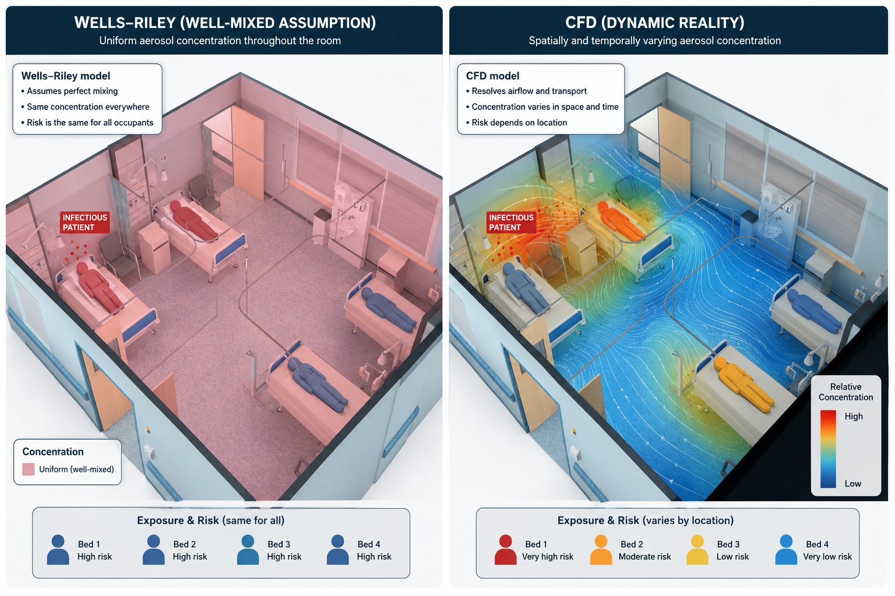

When the Healthy Buildings Network launched at the University of Leeds in October 2024, one keynote cut straight to the heart of why the network exists: "Healthy Buildings for Public Health," delivered by Prof. Catherine Noakes OBE FREng.
Noakes is Professor of Environmental Engineering for Buildings in Leeds' School of Civil Engineering, and one of the most influential voices internationally on airborne infection transmission and ventilation. During the COVID-19 pandemic she served on the UK Government's Scientific Advisory Group for Emergencies (SAGE), advising on the evidence linking ventilation, aerosols, and indoor infection risk — work that has since reshaped how engineers, architects, and infection control teams think about the buildings we get treated, and treat others, in.
Her HBN keynote made a simple but easily overlooked point: building design is public health infrastructure. Ventilation, room layout, and airflow are not background engineering details — they actively shape who gets exposed to what, and by how much.
Why Hospitals Are Different
Most buildings are designed to keep occupants comfortable. Hospitals have to do that while also containing pathogens, protecting immunocompromised patients, supporting staff working long shifts in full PPE, and keeping energy costs under control — often within a building shell that's decades old and wasn't designed with any of this in mind.
General wards, isolation rooms, operating theatres, and waiting areas each carry a different risk profile and need a different ventilation strategy. Getting this wrong doesn't just mean discomfort — in a healthcare setting, it can mean transmission.
Beyond Well-Mixed Assumptions: What CFD Reveals
Much of the classical thinking on airborne infection risk — the Wells-Riley model, still widely used today — assumes a room behaves like a well-mixed box: pollutants and pathogens spread evenly, and everyone in the room shares the same exposure. It's a useful simplification, but it isn't how air actually moves.

Computational fluid dynamics (CFD) tells a messier, more realistic story. Resolve the actual airflow in a four-bed bay, and exposure risk is rarely uniform: the patient nearest an infectious source may face very high risk, while a bed positioned near a supply diffuser or extract grille can be comparatively protected — even in the same room, breathing what is nominally the "same" air.
This is the kind of engineering detail that research groups like Noakes' have spent years building an evidence base around: where you put a bed, a door, or a ventilation grille in a ward is not a cosmetic decision. It's an infection-control decision, and CFD is the tool that makes those consequences visible before a room is ever built.
What This Means for Building Design
Translating this research into practice touches almost every layer of a healthcare building's engineering:
Ventilation rate and air changes
Higher air change rates dilute airborne pathogens faster, but must be balanced against energy use, noise, and draught comfort for patients and staff.
Airflow direction and pressure regimes
Isolation rooms rely on negative (or positive, for protective isolation) pressure to control which way air — and what it's carrying — moves relative to corridors and shared spaces.
Bed spacing and room layout
As the CFD comparison above shows, where a bed sits relative to supply and extract points can matter as much as the ventilation rate itself.
Supplementary engineering controls
Filtration and germicidal UV can add a layer of protection in spaces where ventilation alone can't feasibly achieve the air change rates infection control would ideally call for.
None of these are new engineering concepts individually. What's changed — and what Noakes' keynote pressed home — is the depth of evidence now available connecting them directly to infection outcomes, and the modelling tools that let designers test decisions before pouring concrete.
Beyond the Lab
Noakes' influence hasn't stayed confined to journals and government advisory rooms. In 2021, she brought this work to a much wider public audience as part of the Royal Institution Christmas Lectures — a reminder that the science of "the air we share" is exactly the kind of topic that benefits from being explained well beyond the lecture theatre. It's the same instinct behind HBN's own public-facing events: research on healthy buildings only does its job once people outside the field understand it too.
A thread running through HBN's work
Hospital ventilation sits at the intersection of everything this network cares about: engineering, public health, and the built environments people can't opt out of. Prof. Noakes' keynote at our launch — and the body of research behind it — is exactly the kind of cross-disciplinary thinking HBN exists to support and connect.
Read more about the day in our HBN launch recap, or join the network if this is the kind of work you want to be part of.